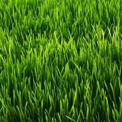

Grass is green because of the presence of chlorophyll throughout the leaves and stems. Chlorophyll is a pigment that allows plants to capture energy from the Sun in order to power the process of photosynthesis.Grass is green because of the presence of chlorophyll throughout the leaves and stems. Chlorophyll is a pigment that allows plants to capture energy from the Sun in order to power the process of photosynthesis.Grass is green because of the presence of chlorophyll throughout the leaves and stems. Chlorophyll is a pigment that allows plants to capture energy from the Sun in order to power the process of photosynthesis.Grass is green because of the presence of chlorophyll throughout the leaves and stems. Chlorophyll is a pigment that allows plants to capture energy from the Sun in order to power the process of photosynthesis.Grass is green because of the presence of chlorophyll throughout the leaves and stems. Chlorophyll is a pigment that allows plants to capture energy from the Sun in order to power the process of photosynthesis.  Grass is green because of the presence of chlorophyll throughout the leaves and stems. Chlorophyll is a pigment that allows plants to capture energy from the Sun in order to power the process of photosynthesis.Grass is green because of the presence of chlorophyll throughout the leaves and stems. Chlorophyll is a pigment that allows plants to capture energy from the Sun in order to power the process of photosynthesis.
Grass is green because of the presence of chlorophyll throughout the leaves and stems. Chlorophyll is a pigment that allows plants to capture energy from the Sun in order to power the process of photosynthesis.Grass is green because of the presence of chlorophyll throughout the leaves and stems. Chlorophyll is a pigment that allows plants to capture energy from the Sun in order to power the process of photosynthesis.